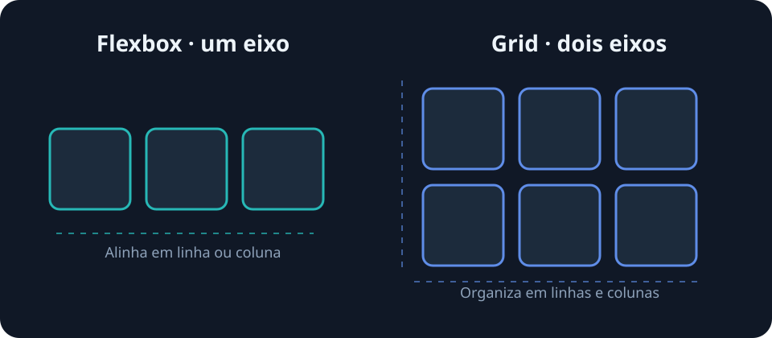

Caderno de estudos · CSS · 8 min de leitura
Flexbox vs. CSS Grid: quando utilizar cada um?
Dois sistemas de layout poderosos, com focos diferentes. Veja como escolher o mais adequado para cada parte da interface.
Organizar elementos na página
Em uma interface, precisamos decidir onde cada elemento aparece e como ele se comporta quando o espaço muda. CSS oferece mais de uma ferramenta para isso. Flexbox e Grid resolvem problemas parecidos, mas cada um facilita um tipo diferente de organização.
Uma forma simples de começar é pensar na direção do layout: os elementos fluem principalmente em uma direção ou precisam ser organizados em linhas e colunas ao mesmo tempo?
O que é Flexbox?
Flexbox (Flexible Box Layout) organiza elementos ao longo de um eixo principal. É um modelo unidimensional: podemos distribuir itens numa linha ou numa coluna, controlar o espaço entre eles e alinhar o conjunto.
O eixo transversal cruza o eixo principal. Com flex-direction: row, o principal é horizontal e o transversal é vertical; com column, as direções se invertem. Flexbox é prático para menus, grupos de botões e alinhamento de componentes.
.menu {
display: flex;
align-items: center;
justify-content: space-between;
gap: 1rem;
}O que é CSS Grid?
CSS Grid permite definir uma grade de linhas e colunas e posicionar itens nela. É um modelo bidimensional, útil quando a relação entre as duas direções importa, como numa galeria ou na estrutura de uma página.
As trilhas da grade podem ser dimensionadas de forma flexível. Por exemplo, repeat(3, 1fr) cria três colunas de largura igual, e gap define o espaço entre elas.
.galeria {
display: grid;
grid-template-columns: repeat(3, 1fr);
gap: 1rem;
}
Flexbox e Grid lado a lado
| Aspecto | Flexbox | CSS Grid |
|---|---|---|
| Tipo de layout | Unidimensional | Bidimensional |
| Organização | Uma linha ou coluna por vez | Linhas e colunas em conjunto |
| Casos de uso | Menu, botões, alinhamento | Galeria, grade, layout de página |
| Vantagem | Distribuição e alinhamento flexíveis | Controle preciso das áreas da grade |
Quando usar cada um?
- Menu de navegação: Flexbox distribui os links em uma linha.
- Galeria de fotos: Grid cria colunas e linhas responsivas.
- Alinhamento de botões: Flexbox alinha e espaça os botões.
- Layout completo em colunas: Grid ajuda a coordenar áreas da página.
Um exemplo de marcação
<section class="cartoes">
<article>Card um</article>
<article>Card dois</article>
<article>Card três</article>
</section>Aplicando Grid à seção, os cartões formam uma grade. Dentro de cada cartão, Flexbox pode alinhar o título e um botão. Os recursos podem trabalhar juntos.
Conclusão
Flexbox e CSS Grid são complementares. Use Flexbox quando o desafio principal for alinhar itens numa direção; escolha Grid quando a estrutura depender de linhas e colunas. Em projetos reais, é comum combinar os dois e testar o resultado em diferentes larguras.
Voltar ao início do artigo ↑